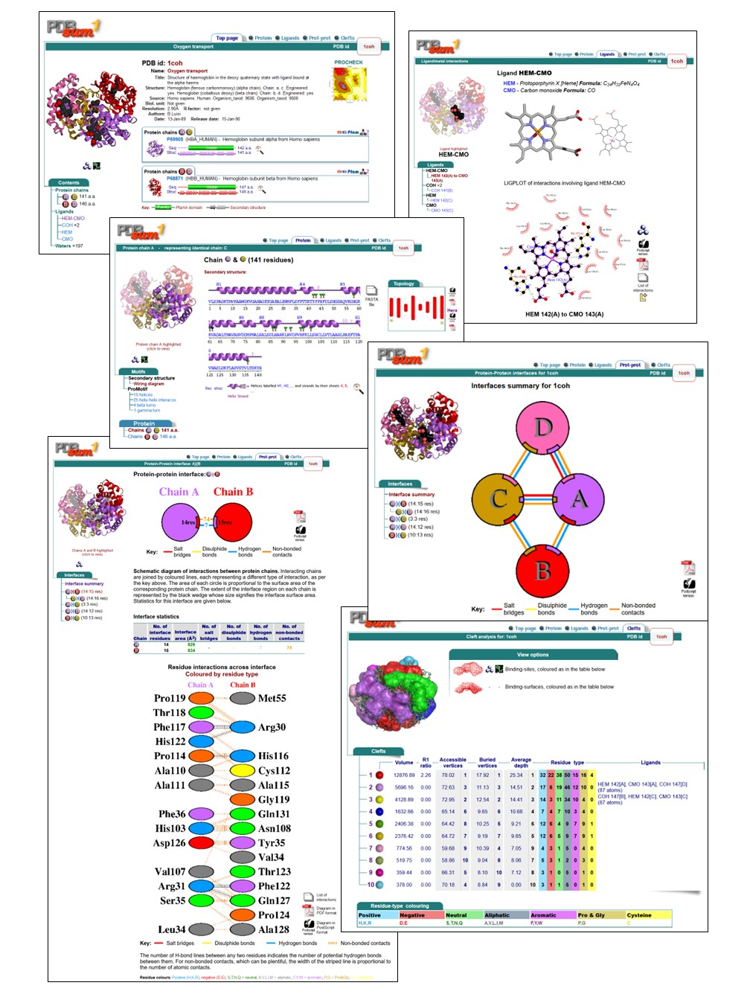

PDBsum1 - standalone PDBsum analyses

|
PDBsum1 is a standalone version of
PDBsum Generate for local installation and running.
It generates the same analyses as PDBsum, with the added
advantage of allowing you direct access to the computed data.
Click
on Installation in the
lefthand menu for download instructions.
|

Example PDBsum1 pages for PDB entry 1coh
|
Last modified: 13 May 2022
|